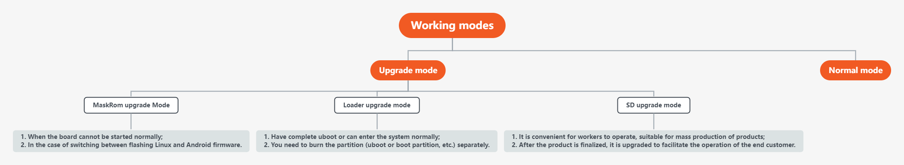

1. Introduction to updating firmware¶
1.1. Preface¶
ROC-RK3399-PC Pro has 2 working modes. Under normal circumstances, boot directly into Normal mode to start the system normally. If you need to upgrade the board subsystem, you can choose the appropriate Upgrade mode to upgrade the firmware according to the situation. Note: ROC-RK3399-PC Pro installs the Android operating system by default.

ROC-RK3399-PC Pro is classified according to the working mode and can be divided into two working modes:
1.2. Normal mode¶
| Working Mode | Normal Mode | Upgrade Mode |
|---|---|---|
| Boot Media | eMMC Interface/SDMMC Interface | |
| Description | Normal mode is the normal startup process, each component is loaded in sequence and enters the system normally. |
There are currently 3 upgrade modes supported, each with their own advantages and disadvantages: 1. MaskRom Upgrade Mode 2. Loader upgrade mode 3. SD upgrade mode |
1.3. Upgrade mode¶
Among the upgrade modes, the comparison between different upgrade modes:
| Upgrade mode | MaskRom Upgrade Mode | Loader upgrade mode | SD upgrade mode |
|---|---|---|---|
| Quick description | 1. Use the USB cable to connect the motherboard to the computer; 2. The hardware operation makes the board enter the upgrade mode; 3. Use USB to upgrade the board firmware on the PC. |
1. Use the USB cable to connect the motherboard to the computer; 2. Software or key operation makes the board enter the upgrade mode; 3. Use USB to upgrade the board firmware on the PC. |
1. Use the upgrade card making tool to make the MicroSD card as an upgrade card; 2. Insert the upgrade card into the motherboard, power on, and the machine will automatically perform the upgrade. |
| Connection method | USB | USB | TF card (a few are SD card slots) |
| Upgrade Tool Windows PC Linux PC |
Upgrading firmware on Windows Upgrading firmware on Linux |
Upgrading firmware on Windows Upgrading firmware on Linux |
Making an Upgrade Card on Windows Not support |
| Entry method | Requires hardware operation | Key or software entry | Power on and enter directly |
| Conditions of Use | Hardware operation entry | Can use uboot normally | Nothing |
| Recommended usage scenarios | 1. When the board cannot be started normally; 2. When switching between programming Linux and Android firmware. |
1. Have a complete uboot or can enter the system normally; 2. Need to burn the partition separately (uboot or boot partition, etc.). |
1. It is convenient for workers to operate, suitable for mass production of products; 2. The products can be upgraded after finalization, which is convenient for end customers to operate. |
| Advantage | 1. The most basic programming method; 2. Non-firmware and hardware problems can generally be successfully programmed; 3. No uboot support is required , to save the bricked board; 4. Support cross-system upgrade (Linux and Android, etc.). |
1. The programming effect is similar to MaskRom Upgrade Mode; 2. It can write partitions separately; 3. It is convenient to enter the loader mode. |
1. Easy to operate, just plug in the card to start; 2. It combines the advantages of MaskRom Upgrade Mode. |
| Disadvantages | 1. It is difficult to enter the product, and it is difficult to remove the shell; 2. It is troublesome to program the partition table, and it is difficult to program the partitions individually; 3. The device needs to be completely erased and then programmed. |
1. A complete loader (usually uboot) is required; 2. Cross-system upgrade requires a complete erasing of the device and then programming. |
1. Requires to synthesize full firmware. |
1.3.1. MaskRom Upgrade Mode¶
In general, there is no need to enter MaskRom Upgrade Mode. Only when the bootloader verification fails (the IDB block cannot be read, or the bootloader is damaged), the BootRom code will enter this mode. At this time, the BootRom code waits for the host to transmit the bootloader code through the USB interface, load and run it. When the board becomes bricked and cannot start or upgrade the program normally, you can also manually enter the MaskRom Upgrade Mode.
To forcibly enter MaskRom Upgrade Mode, please refer to the chapter “MaskRom Upgrade Mode”.
1.3.2. Loader upgrade mode¶
In Loader upgrade mode, the bootloader will enter an upgrade state, waiting for host commands for firmware upgrades, etc. To enter this mode, the bootloader must detect a RECOVERY key press at startup and the USB is connected.
To force into Loader upgrade mode, see the chapter “Loader upgrade mode”.
1.3.3. SD upgrade mode¶
Using SD upgrade is essentially to make a bootable SD-boot upgrade firmware, let the board SD boot, erase and program the EMMC.
To forcibly enter SD upgrade mode, please refer to the chapter “Upgrade Firmware Using SD Card”.